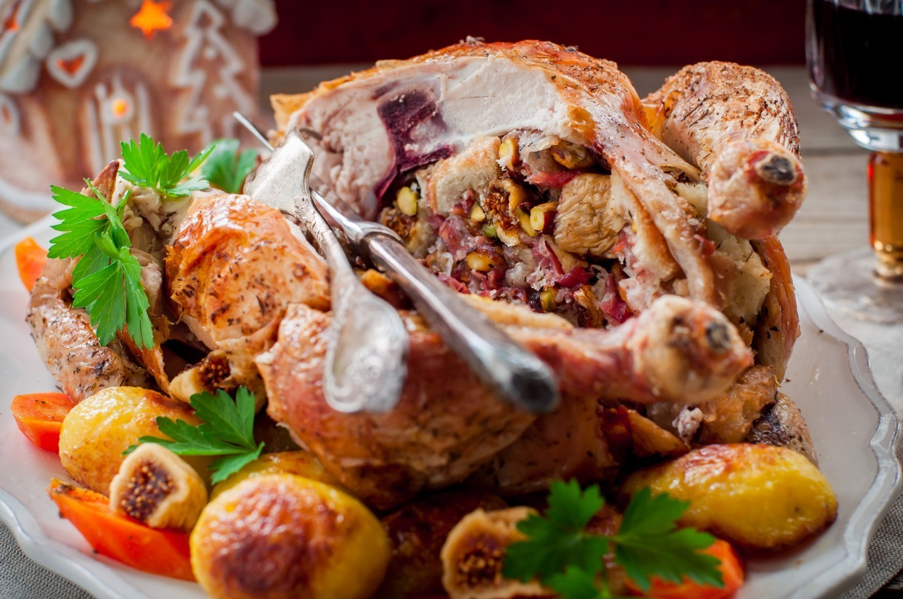

Ricette calde
Home
Category
Ricette Minestre calde - Le ricette di GialloZafferano
Minestre e zuppe: 10 ricette calde e nutrienti | Come uno chef
Ricette con caffè caldo | Bevande calde | Starbucks® Coffee .
VELLUTATE: 5 ricette calde e confortevoli - Rossella In Padella
15 piatti caldi per affrontare i giorni della merla
Ricette invernali facili e veloci | Ricette della Nonna
71 Ricette calde - Star
14 ricette di zuppe calde deliziose da preparare a casa
Minestre, Zuppe e Vellutate: Idee per Ricette Calde, Deliziose .
Ricette calde vegetariane: 10 idee facili e veloci | Food Blog
Services
Privacy policy
Terms and Conditions
Photo gallery
Contact
2021.06.21 12:12

First Name
Last Name
Country
Germany
Italy
Spanish
Australia
Canada
USA
Subject
Ricette Minestre calde - Le ricette di GialloZafferano
Minestre e zuppe: 10 ricette calde e nutrienti | Come uno chef
Ricette con caffè caldo | Bevande calde | Starbucks® Coffee .
VELLUTATE: 5 ricette calde e confortevoli - Rossella In Padella
15 piatti caldi per affrontare i giorni della merla
Cerchi la di una buona zuppa calda da preparare in una fredda giornata? Prova una delle 14 .
Ricette invernali facili e veloci | Ricette della Nonna
71 Ricette calde - Star
14 ricette di zuppe calde deliziose da preparare a casa
Minestre, Zuppe e Vellutate: Idee per Ricette Calde, Deliziose .
Ricette calde vegetariane: 10 idee facili e veloci | Food Blog
Featured Projects
Menu
Last Photo